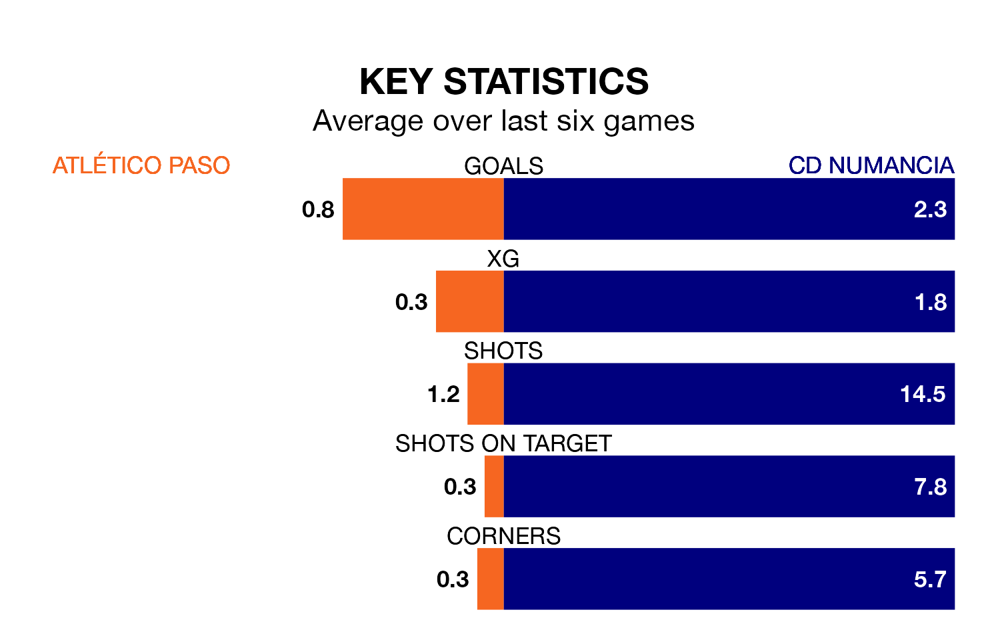

Two of Segunda División RFEF Group 5's top sides face each other in Sunday's early kick-off, when third-placed Atlético Paso host second-placed CD Numancia.
Atlético Paso have picked up nine wins and eight draws from 20 games so far this season, and sit on the same number of points as the visitors going into the 11am match.
Numancia, meanwhile, have won 10 and drawn five, picking up 35 points.
With 34 goals in 20 games so far this season, Numancia are the league's highest scorers with 1.7 goals per game. And they are conceding fewer than average, letting in 21 goals at a rate of 1.0 per game.
Atlético Paso, meanwhile, are below average scorers, with 0.8 goals per game, compared to a league average of 1.1. They have conceded 0.4 goals per game.
The home team are in reasonable form in Segunda División RFEF Group 5, with three wins and two draws from their last six games.
With four wins and a draw over that period, the visitors' form is slightly better – they have taken 13 points from 18, compared to Atlético Paso's 11.
Atlético Paso's last match was on January 28, a 0-0 draw against Illescas.
Numancia beat Llerenense 2-0 last time out, also on January 28.
Updated: 13:20 (UTC), 29/01/24